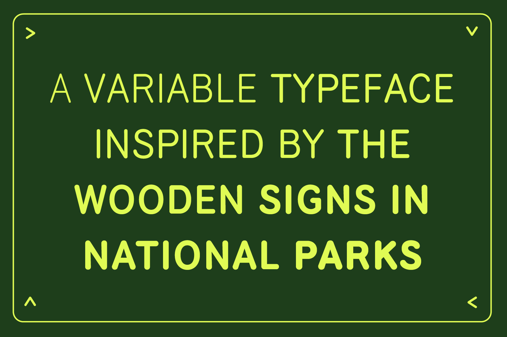
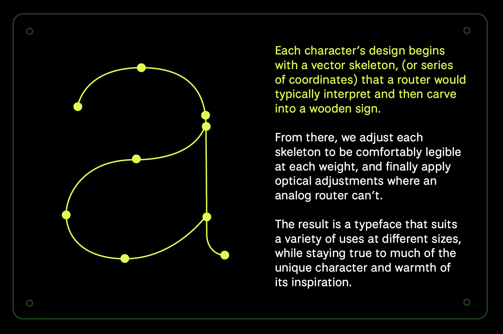
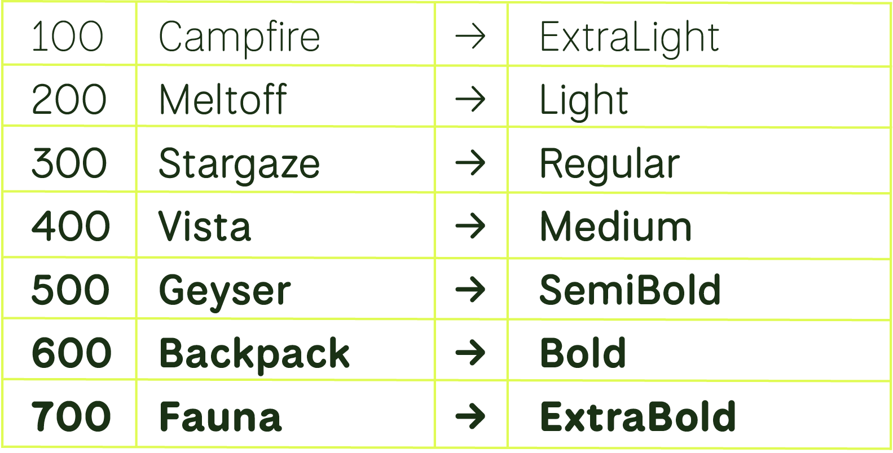

National Park is a variable font offering 7 weights (Extra Light, Light, Regular, Medium, SemiBold, Bold and Extra Bold).
To contribute, see github.com/benhoepner/National-Park.

The letterforms found on the wooden signage at the Rocky Mountain National Park inspired the creation of the National Park. The letters on these wooden trail and directional signs are a system of paths, points, and curves that a router follows. The router’s "bit" follows the path and gives the letters its stroke weight or thickness when engraving a sign. National Park Typeface walks along the path of both honoring the quirky nature of the forms being created by a router bit and optimizing the forms to work in a variety of sizes and languages for print, web, and mobile platforms.
 The design of each character begins with a vector skeleton, represented by a series of coordinates that a router would typically interpret and carve into a wooden sign. From there adjustments were made to each skeleton to ensure comfortable legibility at different weights, and we also incorporate optical adjustments where the capabilities of an analog router falls short. The result is a typeface that stays true to its unique inspiration, maintaining its inviting warmth and distinctive character. It can be effectively utilized across a wide range of applications while preserving the essence that makes it truly special.